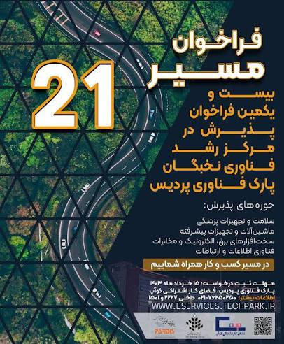

حضور شرکت کهن سیستم فردا در بیستویکمین فراخوان پذیرش مرکز رشد فناوری نخبگان پارک فناوری پردیس، برای من فقط دریافت مجوز استقرار یا عضویت در یک مجموعه فناورانه نبود؛ بلکه نتیجه مسیری بود که با توسعه محصول، تشکیل تیم تخصصی و تلاش برای تبدیل ایدههای فناورانه به راهکارهای واقعی آغاز شد.
در این دوره از پذیرش، حدود ۱۵۰ شرکت، تیم فناور و ایدهپرداز حضور داشتند. پس از طی مراحل ارزیابی، ارائه مستندات، معرفی توانمندیهای فنی و بررسی برنامه توسعه کسبوکار، شرکت کهن سیستم فردا توانست بهعنوان یکی از شرکتهای پذیرفتهشده، وارد مرکز رشد فناوری نخبگان پارک فناوری پردیس شود.
این تجربه به من نشان داد که برای ورود به یک زیستبوم حرفهای فناوری، صرفاً داشتن یک ایده جذاب کافی نیست. تیمها باید عزم جدی، توان اجرایی، محصول واقعی و برنامه مشخصی برای ورود به بازار داشته باشند.
بیستویکمین فراخوان مرکز رشد فناوری نخبگان پارک فناوری پردیس
بیستویکمین فراخوان عضویت در مرکز رشد فناوری نخبگان پارک فناوری پردیس با هدف شناسایی و پذیرش تیمها و شرکتهای نوپای فناور منتشر شد.

بر اساس اطلاعات منتشرشده، شرکتها و تیمهای فعال در حوزههای زیر امکان حضور در این فراخوان را داشتند:
- فناوری اطلاعات و ارتباطات
- نرمافزار و محصولات دیجیتال
- سلامت و تجهیزات پزشکی
- ماشینآلات و تجهیزات پیشرفته
- برق، الکترونیک و مخابرات
- محصولات و خدمات مبتنی بر فناوریهای متوسط و پیشرفته
در این فرایند، عواملی مانند انسجام تیم، سطح فناوری، نوآوری، نیاز بازار، مدل کسبوکار و ظرفیت تجاریسازی محصول مورد ارزیابی قرار میگرفت.
ورود شرکت کهن سیستم فردا به مرکز رشد
شرکت کهن سیستم فردا با تمرکز بر فناوری اطلاعات، هوش مصنوعی، امنیت سایبری، زیرساخت شبکه و توسعه راهکارهای هوشمند، در این فراخوان حضور پیدا کرد.
در فرایند پذیرش تلاش کردیم فقط درباره ایدهها و برنامههای آینده صحبت نکنیم. باید نشان میدادیم که چه توانمندیهایی در تیم شکل گرفته، چه محصول یا خدمتی ارائه میکنیم، چه مسئلهای را حل میکنیم و بازار هدف ما کجاست.
از نگاه من، یکی از عوامل مؤثر در پذیرش شرکت کهن سیستم فردا، عبور از مرحله ایدهپردازی و حرکت به سمت توسعه محصول و راهکارهای قابل اجرا بود.
مرکز رشد به دنبال تیمهایی است که علاوه بر دانش فنی و نوآوری، توانایی تبدیل فناوری به یک کسبوکار واقعی و قابل توسعه را نیز داشته باشند.
رقابت میان حدود ۱۵۰ شرکت و ایدهپرداز
حضور حدود ۱۵۰ شرکت، تیم فناور و ایدهپرداز در بیستویکمین فراخوان مرکز رشد، نشان میداد که رقابت برای ورود به این مجموعه جدی است.
بسیاری از شرکتکنندگان، ایدههای خلاقانه و توانمندیهای فنی قابل توجهی داشتند؛ اما تفاوت میان یک ایده اولیه و یک کسبوکار فناورانه، در توانایی اجرا مشخص میشود.
هر تیم باید بتواند نشان دهد که:
- یک مسئله واقعی از بازار را شناسایی کرده است؛
- برای آن مسئله، راهکار مشخص و قابل اجرا دارد؛
- نمونه اولیه یا محصول قابل ارائه تولید کرده است؛
- مشتریان هدف خود را میشناسد؛
- تیم توانایی اجرای پروژه را دارد؛
- مدل درآمدی مشخصی طراحی کرده است؛
- و برای توسعه محصول و کسبوکار، نقشه راه عملیاتی دارد.
در نهایت، شرکت کهن سیستم فردا توانست مراحل ارزیابی را پشت سر بگذارد و در میان متقاضیان، به جمع شرکتهای مرکز رشد فناوری نخبگان پارک فناوری پردیس بپیوندد.
تجربه من از فرایند پذیرش مرکز رشد
فرایند پذیرش در مرکز رشد، فقط تکمیل فرم، ارسال رزومه یا معرفی یک ایده نیست. تیم باید بتواند از نظر فنی، اجرایی و تجاری از طرح خود دفاع کند.
یکی از مهمترین پرسشها این است که محصول یا خدمت موردنظر دقیقاً چه مسئلهای را حل میکند و چرا مشتری باید برای استفاده از آن هزینه پرداخت کند.
بعضی ایدهها از نظر فنی جذاب هستند، اما مشتری، بازار یا مدل درآمدی مشخصی ندارند. برخی دیگر، بازار مناسبی را شناسایی کردهاند، اما هنوز محصول آنها به مرحلهای نرسیده است که قابلیت ارائه و توسعه داشته باشد.
تجربه حضور در بیستویکمین فراخوان مرکز رشد فناوری نخبگان به من نشان داد که برای موفقیت، باید میان سه مؤلفه اصلی تعادل برقرار شود:
تیم منسجم و توانمند
یک ایده مناسب بدون تیم اجرایی قوی، شانس محدودی برای تبدیل شدن به کسبوکار دارد.
اعضای تیم باید مسئولیتهای مشخصی داشته باشند و بتوانند حوزههای فنی، مدیریتی، بازاریابی، فروش و توسعه کسبوکار را پوشش دهند.
محصول واقعی و قابل ارائه
داشتن طرح، فایل ارائه یا توضیح شفاهی کافی نیست. تیم باید تا حد امکان نمونه اولیه، محصول قابل نمایش، مستندات فنی یا سابقه اجرای پروژه داشته باشد.
وجود یک محصول واقعی نشان میدهد که تیم از مرحله صحبت و برنامهریزی عبور کرده و وارد مرحله اجرا شده است.
بازار و مدل درآمدی مشخص
محصول باید برای یک نیاز واقعی طراحی شده باشد. شناخت مشتری، رقبا، مزیت رقابتی، قیمتگذاری، مدل درآمدی و مسیر فروش، به اندازه فناوری اهمیت دارد.
مرکز رشد فقط محل توسعه فناوری نیست؛ بلکه بستری برای تبدیل فناوری به کسبوکاری پایدار و قابل توسعه است.
توصیه من به متقاضیان فراخوان مرکز رشد
به افرادی که قصد دارند در فراخوانهای مرکز رشد فناوری نخبگان پارک فناوری پردیس یا سایر مراکز نوآوری شرکت کنند، توصیه میکنم با آمادگی جدی وارد این مسیر شوند.
برای موفقیت باید عزم جدی، تیم منسجم و محصول واقعی داشته باشید.
صرفاً علاقهمند بودن به کارآفرینی یا داشتن یک ایده اولیه کافی نیست. این مسیر به زمان، سرمایهگذاری، آزمون و خطا، تحمل فشار و استمرار نیاز دارد.
تیمی که هنوز محصولی نساخته، مشتری خود را نمیشناسد یا برنامه مشخصی برای ورود به بازار ندارد، در فرایند ارزیابی با چالش جدی مواجه خواهد شد.
پیشنهاد میکنم پیش از ثبت درخواست، موارد زیر را آماده کنید:
- معرفی شفاف مسئله و راهکار
- نمونه اولیه یا نسخه قابل ارائه محصول
- معرفی اعضای تیم و مسئولیت هر فرد
- تحلیل بازار و مشتریان هدف
- بررسی رقبا و مزیت رقابتی
- مدل درآمدی اولیه
- نقشه راه فنی و تجاری
- مستندات پروژهها و سوابق اجرایی
- پیچدک حرفهای و قابل دفاع
همچنین باید آمادگی پاسخگویی به پرسشهای دقیق درباره فناوری، بازار، هزینه توسعه، روش درآمدزایی، قابلیت مقیاسپذیری و ریسکهای کسبوکار را داشته باشید.
دوره آمادهسازی و فضای کار اشتراکی کوآپ
بر اساس ساختار اعلامشده برای بیستویکمین فراخوان، تیمهای پذیرفتهشده اولیه در فضای کار اشتراکی پارک فناوری پردیس با نام کوآپ مستقر میشوند.
این تیمها در یک دوره آمادهسازی ۱۰ هفتهای شرکت میکنند که شامل حدود ۴۰ ساعت کارگاه آموزشی در موضوعاتی مانند موارد زیر است:
- طراحی و اصلاح مدل کسبوکار
- تدوین نقشه راه عملیاتی
- تحلیل بازار و مشتری
- تدوین پیچدک
- نحوه ارائه به سرمایهگذاران
- تجاریسازی محصولات فناورانه
این دوره به تیمها کمک میکند تا پیش از ورود به مراحل بعدی رشد، نقاط ضعف فنی و تجاری خود را شناسایی و اصلاح کنند.
پذیرش در مرکز رشد، آغاز مسیر است
پذیرش در مرکز رشد فناوری نخبگان یک موفقیت مهم است، اما پایان مسیر محسوب نمیشود.
ارزش واقعی عضویت در مرکز رشد زمانی مشخص میشود که شرکت بتواند از ظرفیتهای موجود برای توسعه محصول، ایجاد ارتباطات تجاری، جذب سرمایه، ورود به بازار و افزایش فروش استفاده کند.
قرار گرفتن در پارک فناوری پردیس، امکان ارتباط با شرکتهای فناور، مدیران، متخصصان، صنایع و سرمایهگذاران را فراهم میکند؛ اما استفاده از این ظرفیتها همچنان به عملکرد و پیگیری خود تیم وابسته است.
هیچ مرکز رشد یا پارک فناوری نمیتواند جایگزین تلاش مستمر، تصمیمگیری صحیح و قدرت اجرای مدیران یک شرکت شود.
ادامه مسیر کهن سیستم فردا در پارک فناوری پردیس
ورود شرکت کهن سیستم فردا به مرکز رشد فناوری نخبگان، مرحله جدیدی در مسیر توسعه فعالیتهای ما بود.
حضور در این زیستبوم، امکان تعامل نزدیکتر با شرکتهای فناور، مجموعههای صنعتی، متخصصان و مدیران حوزه فناوری را فراهم کرد و بستر مناسبی برای توسعه محصولات و راهکارهای مبتنی بر هوش مصنوعی، امنیت سایبری و زیرساخت فناوری اطلاعات ایجاد شد.
هدف ما در کهن سیستم فردا این است که فناوری را در سطح ایده یا نمونه نمایشی متوقف نکنیم، بلکه آن را به یک محصول عملیاتی، قابل استفاده و دارای ارزش اقتصادی برای مشتری تبدیل کنیم.
از نگاه من، آینده متعلق به شرکتهایی است که بتوانند میان دانش فنی، شناخت بازار و قدرت اجرا ارتباط واقعی برقرار کنند.
جمعبندی
پذیرش شرکت کهن سیستم فردا در بیستویکمین فراخوان مرکز رشد فناوری نخبگان پارک فناوری پردیس و قرار گرفتن در میان شرکتهای منتخب از بین حدود ۱۵۰ شرکتکننده و ایدهپرداز، نتیجه یک مسیر مبتنی بر توسعه محصول، تجربه اجرایی و تلاش تیمی بود.
این تجربه برای من ثابت کرد که در زیستبوم فناوری، ایده زمانی ارزشمند است که قابلیت اجرا داشته باشد و محصول زمانی موفق میشود که برای یک نیاز واقعی بازار طراحی شده باشد.
به همه افرادی که قصد حضور در فراخوانهای مرکز رشد را دارند توصیه میکنم با دیدی جدی وارد شوند، محصول واقعی ایجاد کنند، تیم مناسبی بسازند و برای یک مسیر بلندمدت آماده باشند.
موفقیت در فناوری معمولاً نتیجه یک ایده ناگهانی نیست؛ بلکه نتیجه استمرار، یادگیری، اصلاح اشتباهات و اجرای مداوم است.
محمد کهندژ
مدیرعامل شرکت کهن سیستم فردا
فعال حوزه هوش مصنوعی، امنیت سایبری و فناوری اطلاعات